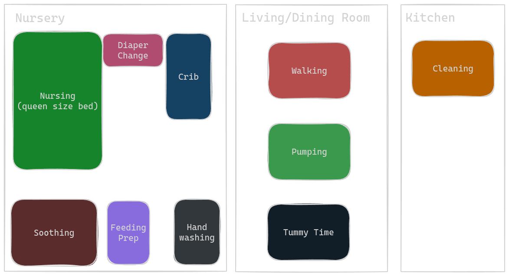

Baby Products Primer from First Time Parent¶
Overview¶
Hello, first time parent here giving advice to my younger self on what items to add/cut from my baby registry.
When we made the original registry, we referenced a 2nd degree personal connection's registry that was approved by multiple 3rd degree connections.
We essentially bought items without deeply thinking through the workflow.
I would advise my younger self to add items to the registry by working backwards from the workflow.
E.g., seek first to understand what tasks mama and papa will undertake in the first two weeks, first two months, and first 6 months, to formulate an idea of what items are critical.
We created our registry by looking at those from our personal connections. These registries organized the items by functional area (mobility, feeding, etc), and did not provide context of a specific item's impact.
In this document, first I share our workflow during baby's first two weeks and first two months along with the items we used. Next, I share my buying criteria. Finally, I provide a "don't make me think" list of products.
Though, all that being said, the MOST useful was Amazon Prime super fast shipping because sometimes you just don't know what you don't know.
Registry¶
For context, our baby was born one week prematurely at 5lbs 6.4 oz. Many items have weight limits. If your baby is heavier, you may be able to use such items sooner. Keep in mind our baby is one week preterm, so his milestones may be delayed. Perhaps what we experienced for two weeks, full term babies only experience for one? I wouldn't know.
First Two Weeks¶
Driving baby home, and to doctor appointments¶
Baby needs to sit in the car to drive home from the hospital, and to three doctor apointments: newborn check in, lactation, and 2 week check in. We need to ensure baby is safe during these trips.
In our case, the doctor's office had a large parking lot with free valet services. After we drove the the doctor's office parking lot, we elected to simply carry the baby in the car seat by hand into the doctor's office. An alternative approach is to shuttle baby via a stroller.
-
Rear facing infant car seat
- IMO, this is the most important item to research as it's something parents can do to minimize risk of injury in the event of an accident. I optimized for safety ratings above all else.
- Infant car seat should have adequete sun protection for baby.
- An optional consideration is whether the car seat can directly latch onto a compatable stroller to ease transporting the baby from the car to the final destination. E.g., it takes more time to unrestrain the baby from the car seat, and re-restrain the baby into the stroller.
- The last consideration is how long can baby use the car seat for. Each car seat has weight and height limits.
-
Car Window shade
- Keep the sun away until baby has more natural UV protection
- Baby on board stickers
-
Newborn clothes
- Only need 2-3 onesies because, in our case, the only time the baby needed clothes was upon getting into the car seat to not interfere with the buckles. We need more than one in the event that baby soils the onesie during either the car ride to doctor's or at the doctor's. The rest of the time, we swaddled baby (see subsequent section).
-
Blankets
- We were taught that baby needs one more layer than us. Given it's late spring time, we put baby in the car seat in his onesie, and put one blanket on top of him.
-
Diaper Bag
- We used a diaper bag during our trips to the doctors office. For every visit, we list below how we packed our bag.
- 3 spare diapers as we found ourselves often changing him during the doctor's visit: 1 clean diaper to change him in, 1 to serve as a "shield" if you have a baby boy who can projectile pee upwards, and 1 spare.
- Wet wipes
- 2 spare onesies: In the beginning, we were not great at diapering so occasionally pee would escape the diaper. 1 extra to change baby into, and another just in case
- Feeding gear in the event that baby wants nourishment.
- Nursing cover in the event we need to nurse in public.
- 1 burp cloth and 1 spare blanket to prepare for spit up.
- For the bag itself, a simple bag will suffice. Fancier diaper bags have integrated changing pads or organizational features that make changing/nursing in any condition as seamless as possible. We do not need such features yet at the doctor's office. The actually doctor's office itself has a soft bed with which you can change, and I would think most pediatric centers would have a dedicated nursing area.
- Stroller
- Let's cover this in later sections. In the first two weeks we only used the stroller one time for leisure: after doctor's appointment we latched car seat onto stroller and went for a walk.
Baby's routine at home¶
For the first two weeks, baby predictably eats, sleeps, poops, and repeats every 2-3 hours. For feeding we do triple feeding, where we nurse, supplement, and pump.
We routinely set an alarm for every three hours. Every time we awoke, we followed the sequence of events below:
| Mama | Papa |
|---|---|
| Wash hands with fragance free soap | Wash hands with fragance free soap |
| Arrange pillows in nursing station | Unswaddle and gently wake up baby |
| Prepare supplementary milk | Diaper change |
| Enter nursing station and await papa to bring baby | Bring baby to mama |
| Feed baby for 30 min | Help out when needed, otherwise micro nap |
| Burp baby (skin to skin time) | Update feed log (volume and duration) |
| Clean up feeding parts | Belly massage, bicycle kicks, and knee tucks to help with gas |
| Pump | Diaper change |
| Clean pump parts | Swaddle baby |
| Soothe baby if needed (mama and papa take shifts), or rush to food, or bed | Soothe baby if needed, or rush to either chores, food, or bed |
Ocassionally, we also perform the following:
- Tummy time
- Walks outside
- File baby's nails
And in the event baby is sick, we need to be prepared to measure baby's temperature.

All the baby gear we buy needs to help us stream line these processes, during which we are severely sleep deprived.
-
Baby's sleeping station
- Crib
- mattress
- breathable crib mattress cover
- prefer one that enables airflow to circulate even under the baby to improve temperature regulation and to allow baby to breathe directly throught the cover if necessary)
- baby mobile that plays music
- baby can't see yet, so the visuals are not as important as the audio
- baby monitor - I recommend not wifi based as the monitor needs to be reliable even in the event of wifi outages
- temperature monitor near the crib (NOT in!) to make sure surrounding temp falls within the acceptable range.
-
Hand washing station
- Fragrance free soap for baby's sensitive skin
- Hand lotion that we apply after baby is in bed -> this is a must have as our hands were so dry and chapped due to how often we wash our hands and clean things
-
Diaper changing station
-
Dressor with a changing table and changing pad on top.
-
The top drawer should have diapers, aquaphor, and both wet and dry wipes
- Diapers - Get at least 120 diapers for the first two weeks. Our baby needed a change 1-2 times when awake, and was awake for 8 feedings a day. This places the lower bound around 120 diapers, and the upper bound around 220 diapers.
- Primary Wipes - for most, these would be wet wipes. I actually manually moisten dry wipes each time, and my mother did the same but with cotton balls. For me, I would use on average 2 wipes per diaper change, which equates to around 2x the number of diapers.
- Dry wipes - Keep a pack of dry wipes around, buy more if needed. On occasion I found myself over wetting the wipe, and needing to dry baby off. Here is where dry wipes are very useful. They also come in handy as an extra "shield" to catch baby poop if baby decides to go while being wiped.
- Aquaphor for diaper rash!
- 2nd drawer to hold swaddle blankets, burp clothes, spare sheets
- For context, our baby only slept soundly when tightly swaddled. Empahsis on tightly. Additionally, I was still learning how to change diapers. When I poorly fastened on the diaper, all the linens would suffer.
- For all blankets, I recommend starting with 3, and being prepared to invest in more of the kind that works best for baby. For example, we found jersey/spandex blend blankets to be most effective for our baby, so we bought 6 additional blankets of the same kind. We made this decision after testing the other blanket materials or swaddles available to us.
- Start with 3 of the same type of receiving blankets as the hospital. These are similar to the ones used at our hospital. We were not able to get them in time as they were out of stock. However, I found these the easiest to create a tight swaddle with as there is zero stretch, and perhaps because it's what the nurses trained me with.
- Start with 3 jersey/spandex blend blankets that are square and at larger than TK". For example, we have 47" by 47" blankets. Personally I find this material the 2nd best to create tight swaddles with. The fabric stretches locally, meaning that it stretches in response to baby's arm movement, without deforming any of the swaddle folds. The fabric is also stiff enough such that we can pull it tightly. Though I find the hospital receiving blankets still better for the tightest swaddles, I find the jersey fabric allows baby to more naturally move, and thus, this fabric has become my personal favorite for swaddling.
- Start with 3 square muslin blankets. The fabric here is "spongy", more lightweight than jersey, and highly breathable. More moisture wicking than jersey material. Personally I found it more difficult to swaddle a squirmy baby tightly with muslin since the material is so stretchy and spongy. The fabric would stretch out and later bounce back when pulled on tightly, as opposed to creating a tight wrap. Our baby's arms would escape this swaddle very easily.
- Start with 3 square 30" by 30" flannel blankets. We found these at Target. I typically use this as the outer swaddle layer. I have only tried as inner swaddle layer once, back when I still was not the most proficient swaddler, and I found their small size made it more difficult. I've greatly improved since, and wonder if I'll like them as much as the hospital blankets as the inner swaddle.
- Start with 3 velcro swaddles. Our baby was too small for these, so we didn't use them too much in the first two weeks. However, if they are the correct size for baby, these greatly simplify the swaddling process and make it much easier to create a tight wrap.
- At least 6 burp clothes. They come in handy for spit up, and spills/drips during nursing
- At least 4 crib mattress sheets. In the beginning, my diapering skills were inadequete, leading to frequent bed wettings. Having a many spares prevents needing to frantically do laundry in an ootherwise already hectic time.
- At least 2 mattress waterproof pads. A spare in the even that one of them gets wet.
- 2 baby towels. Later they will be handy for baths. But in the first two weeks, they were great to place on top of the nursing pillows. Soft to the baby's skin.
-
- Clamp light that attaches to the changing table to illuminate those crevices that are vital to clean
- Diaper pail. Game changer. Locks scents in. But most importantly, convinent to reload the bag. Use the ones where the "bag" is just one continuous tube where you manually knot off the bottom end, and cut the top off when full. This feature enables super speedy refill.
-
-
Feeding preparation station
- We had another raised surface (we used a dressor) that we used to prepare supplementary milk.
- Clean, ready to use bottles
- Bottle holding rack
- Journal to log feed info
- Whiteboard to display the time of next feeding, and any feedings notes
- Burp cloth on hand as minor spills and drips are frequent
-
Nursing Station
- We nurse at the bed where we sleep, with the help of 1 wedge pillow, and 6 additional queen size pillows
- We arrange the wedge pillow against the wall for mama to lean back against
- We place an additional queen sized pillow between mama and the wedge pillow. This brings mama forward. The queen sized pillow is placed vertically, such that the width of the pillow does not extend beyond Mama's ribcage. This allows mama to position baby further back (lets closer to wall) as there is space for baby's legs to touch the wedge pillow.
- We stack three queen sized pillows and place them under the arm closest to the breast we plan to nurse with. These pillows create a platform for baby to rest on.
- Ideally, we would like to mirror the set up on the other arm, but we ran out of pillows, so we simple place a giant couch cushion under the second arm.
- We place the final pillow on mama's lap, as a bridge between the two platforms on either side of mama's arms.
- The best pillows are memory foam pillows that do a good job localizing deformations. E.g., when mama presses down on one side of the pillow, the rest of the pillow should show zero movement. We do NOT want the other side of the pillow to lift up, or shift in any way.
- Towels to place on top of the pillows to catch drips
- Burp clothes to clean spit up
- Our lactation consultant taught us she typically recommends at least 6 pillows.
- Clock that Mama and Papa can glance at to be mindful of feeding duration.
-
Soothing Station
- Glider/Rocking chair to sit with baby for extended durations (30 min to 3 hours)
- Pillows to support arms when holding baby
- Blankets to keep baby warm
- Surface to place tablet, and refreshments to keep parent alert during a potentially long soothing session
-
Walking "Station"
- Bassinet that connects to stroller. After we nurse baby, and change his diaper, he enters a sleepy, and potentially fussy state. The easiest way to take him outside for a walk (very beneficial for Mama and Papa), is to swaddle him up and place him in an overnight sleep approved bassinet that can easily be mounted onto a stroller. This way, after walk concludes, and assuming baby is asleep, we simply either detach bassinet from stroller and let baby sleep in bassinet, or we pick up baby from bassinet, and place him in crib
- Alternative solutions to walking:
- Carrying by arm. Sometimes we did this. My worry was dropping the baby in our sleep deprived state. Highly recommend using an arm sling as an extra layer of security
- Using a baby carrier. Personally our baby was too light for the one we had on hand, and we were too tired to research alternative solutions. My concern with the carrier is that the baby is ultimately in a different position that he would be in compared to the crib. Ideally baby stays in laying down position for more seamless transition to the crib post walk.
- Alternative solutions to walking:
- Bassinet that connects to stroller. After we nurse baby, and change his diaper, he enters a sleepy, and potentially fussy state. The easiest way to take him outside for a walk (very beneficial for Mama and Papa), is to swaddle him up and place him in an overnight sleep approved bassinet that can easily be mounted onto a stroller. This way, after walk concludes, and assuming baby is asleep, we simply either detach bassinet from stroller and let baby sleep in bassinet, or we pick up baby from bassinet, and place him in crib
-
Pumping Station
- Breast pump - consult medical professionals
- Timer that Mama could start to know when to stop pumping
- Water / other refreshments within arms reach as it is going to be easier for Mama to be dehydrated
- Charger for baby monitor receiver - make sure baby monitor reciever can be charged and docked at the pumping station. Monitoring baby while pumping is ideal, because Mama can't do much else anyways. This frees up Papa to do chores.
- Tablet and tablet stand to entertain mama
- Wipes/cloth handy for drips
- Bottles to hold milk -> make sure they have built in notation system. E.g., some bottles have a dial on the top to specify day of week, and time of day. Using these dials helps us determine when milk was pumped, which is useful for storing.
-
Tummy Time Station
- Tummy time mat
- High contrast cards to stimulate baby's vision
- Mirrors - we found our baby responds most to mirrors.
-
Baby Hygiene Items
- baby nail file - super gentle
- baby rectal thermometer just in case
- baby nose pump (we also keep on in a corner in the crib)
-
Baby Gear Cleaning Station
- scent free laundry detergent - Do NOT use pods, as loads may be small so you need to be able to micro-dose
- eye masks for mama and papa to sleep with
- Bottle Cleaning Brush set
- Mini tub for the kitchen sink to use as the "sink" for baby gear to prevent contamination
- Baby Dish soap and bottle cleaner
- Baby Bottle countertop drying rack
- Soiled linens basket
-
Misc
- Fan to circulate air (this helps reduce chances of SIDS)
- Curtains for privacy while nursing (our apartment did not have curtains initially, and we wanted to make sure baby got plenty of natural lighting)
- Night light
- Wall powered white noise machine (don't deal with batteries)
- 3 hats for baby.
-
Noteworthy
- We did not need onesies, as baby is swaddled at home, and stays in the swaddle in the bassinet on walks. Personally we needed more swaddle blankets. The only item of clothing needed is hats.
-
Items we wish we had
- Premade meal service, or support person to feed Mama and Papa. Too much is happening in the first two weeks. Mama and Papa need to prioritize sleep. Meal prep is too costly. Even baking a simple pre-made lasagna cuts from precious sleep time. Mama and papa could only manage to prepare food that takes 15 min or less
- Items we regret
- Keekaro Peanut Changer. This is a wipeable foam pad that removes need for laundry. One downside is that it doesn't fit the "standard" dimensions that changing table fences surround. Not a deal breaker though as that is easy enough to DIY. Another downside is that the surface is cold. Baby is super warm from either skin-to-skin time or the swaddle. Can be jarring for newborn to be placed on cold surface. The biggest downside: Not a flat surface. The peanut changer has a built in divet for the head and the torso. Baby was too small, and the head divet created an awkward ridge that caused baby to flail more frequently.
- boppy. Very well reviewed nursing pillow. This pillow is not large enough for newborns. This may be useful when baby is older. We shall see.
First Two Months¶
- Bathing gear
- Baby carrier
- Ergonomics first! Should be able to form an M shape
- Baby rocker
Clothing¶
TK
Buying Criteria¶
When possible, I do my best to follow the following critiera when buying items (ranked).
- Safety first
- when it comes to safety, money is no object!
- Ergonomic for Baby
- make sure product is safe for baby's developement!
- Non toxic
- Try to avoid surrounding baby in VOCs! Research on what tolerable levels are is meh, and products don't publish how much off gassing occurs. To be safe, avoid all together, though IMO no need to be too anxious about this as 90s babies were raised around all sorts of VOCs
- For fabrics, look for Oeko Tex Certification, and/or GOTS for organic fabrics
- For furniture, look for green guard certification, and try to stick to hard wood and water based finishes (avoid particle board if possible)
- Ergonomic / time saving for Mama and Papa
- Should encourage more streamlined or simpler workflow
Don't make me think, just share the items with me¶
First Two Weeks¶
Driving baby home, and to doctor appointments¶
-
Rear facing infant car seat
- Clek Liing, in flame retardant free cloth (link)
- highest ranked car seat for safety by both consumer reports and baby gear lab
- We picked out this seat first, and looked for a compatable stroller 2nd
- Clek Liing, in flame retardant free cloth (link)
- Car Window shade link
- 3 Newborn onesies (link)
-
Blankets for Car
- can reuse swaddles (links below)
- we got an nice looking one for fun (link)
-
Diaper Bag
-
Stroller
- Clek Liing car seat suports maxi cosi adapters, so any stroller that supports that will work
- We picked the bumbleride brand for travel systems as a) that is what Clek recommends and b) the fabrics are PFAS free and Oeko-Tex certified
- Specifically, we chose the all terrain model due to our proximity to graveled trails: Bumbleride Inde All Terrain Stroller (link), with maxi cosi adapters for clek liing (link)
Baby's routine at home¶
-
Baby's sleeping station
-
Crib (link)
- Hardwoods only, and water based finish, greed guard certified
- Can convert eventually to full size bed
-
mattress (link)
- gots and greenguard certified
- waterproof coating
- comes with breathable cover that allows air to flow under the baby -> e.g., in theory babies can breathe through it, so if they accidentally roll over onto their stomach, and their face is pressed against the bed, they can, again, in theory still breath. This is per marketing on their website. I have not personally tested and am not a medical professional, nor am I giving trustworthy advice. These are my personal opinions. Please consult your medical professional, and do not hold me liable.
- mattress breathable crib mattress cover (link)
- One came with mattress, buying an extra ad-hoc
- Burp Cloth, wipes, diapers, spare onesies covered in later section
-
baby mobile that plays music (link)
- Linked to the one we got. I actually do NOT recommend this specific item
- The motor to rotate the mobile is heavy, and hangs directly over the mattress. Were any strapping mechanism to fail, this motor is crashing down onto the mattress potentially at the baby
- Also, battery life is not great. Powered by AAA batteries, but need to be changed every week if you use around 8 times per day.
- That being said, I have yet to find an alternative that self rotates and plays music.
- Linked to the one we got. I actually do NOT recommend this specific item
- baby monitor (link)
- Not wifi based, so even if there is an outage monitor will run
- monitor doubles as optional night light, and music machine
- The camera units need to be connected to wall power, and come with wall mounts, and a tripod mount
- Receiver battery life lasts about day and a half before needing charge.
- Receiver can remotely pan and tilt the camera
- temperature monitor near the crib (NOT in!) (link)
- This one emits, optionally, an amber light when temperature is within acceptable range, and glows blue when room is too cold, and red when room is too hot
- Once glance from anywhere in the room is all it takes to confirm whether room temp is okay
-
-
Hand washing station
-
Diaper changing station
-
Dressor with a changing table and changing pad on top (link)
- greenguard certified
- not ideal in that there is still engineered wood, but needed the hardwood dressors jump in price into the $1000 plus range
-
Diapers - Get at least 120 diapers for the first two weeks. (link)
- buy one pack in newborn size
- once baby arrives, order more in the correct size
-
Primary Wipes
-
for most, these would be wet wipes (link)
- we chose unscented wet wipes that are over 99% water and are hypoallergenic
- I actually manually moisten dry wipes each time (link)
- helpful for super delicate or tender skin, and for drying
-
- Dry wipes (see above bullet)
- Aquaphor for diaper rash! (link)
- Same type of receiving blankets as the hospital. link
- 3 jersey/spandex blend blankets (link)
- Oeto-tex certified
- Start with 3 square muslin blankets.
- picked up from target in person, can't find exact match nor do I remember the brand, but something like (this)
- Start with 3 square 30" by 30" flannel blankets. We found these at Target.
- Start with 3 velcro swaddles (link)
- At least 6 burp clothes. (link)
- At least 4 crib mattress sheets. Examples below. Both either GOTS or oeko-tex certified
- (link)
- (link)
- 2 baby towels. (link)
-
-
Feeding preparation station
- We had another raised surface (we used a dressor) that we used to prepare supplementary milk (link).
- Clean, ready to use bottles (N/A as we actually used a supplementary nutrition system)
- Bottle holding rack (link)
- Journal to log feed info
- Whiteboard to display the time of next feeding, and any feedings notes (link)
- Burp cloth (shared above)
-
Nursing Station
-
Soothing Station
- Glider/Rocking chair to sit with baby for extended durations (30 min to 3 hours)
- no recommendation as we inherited ours
- Pillows to support arms when holding baby (shared above)
- Blankets to keep baby warm
- reuse swaddle, car blanket
- soft fuzzy one we picked up from target (link)
- Surface to place tablet, and refreshments to keep parent alert during a potentially long soothing session (link)
- Glider/Rocking chair to sit with baby for extended durations (30 min to 3 hours)
-
Walking "Station"
- Bassinet that connects to stroller (link)
-
Pumping Station
-
Tummy Time Station
- Tummy time mat (link)
- High contrast cards to stimulate baby's vision (included above)
- Mirrors - we found our baby responds most to mirrors (included above)
-
Baby Hygiene Items
-
Baby Gear Cleaning Station
- scent free laundry detergent (link)
- eye masks for mama and papa to sleep with (link)
- Bottle Cleaning Brush set (link)
- Mini tub for the kitchen sink to use as the "sink" for baby gear to prevent contamination - hosptial provided this for us
- Baby Dish soap and bottle cleaner (link)
- Baby Bottle countertop drying rack (link)
- Soiled linens basket (link)